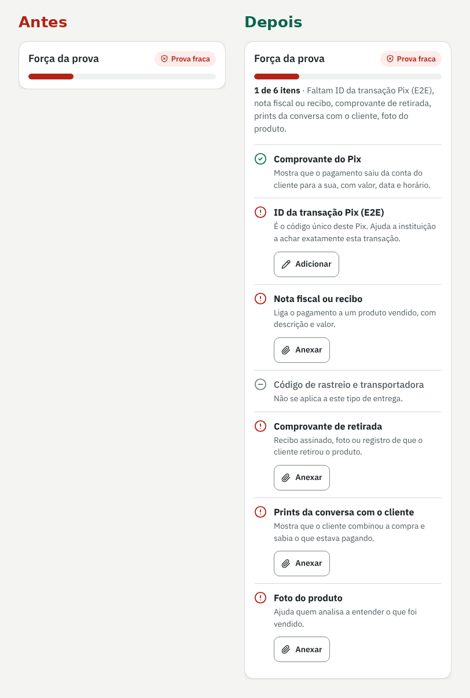
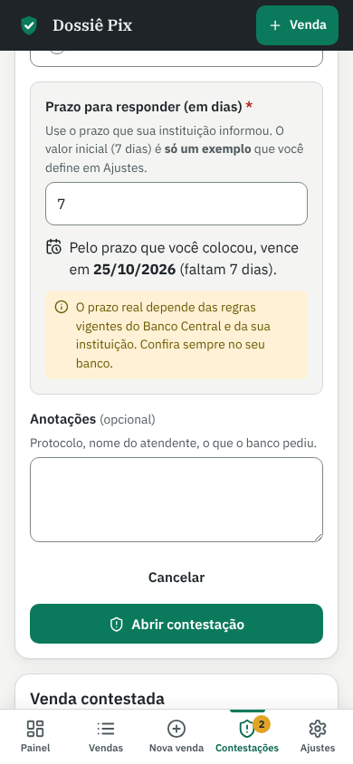
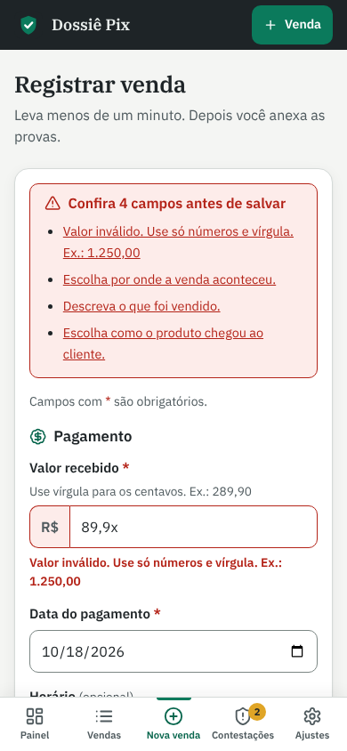
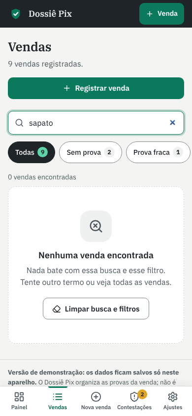

Dossiê Pix
Um app para quem vende por Pix guardar as provas de cada venda na hora certa e, se o pagador pedir devolução, sair com um dossiê organizado em vez de prints soltos.

Contexto
Loja de Instagram, revenda pelo WhatsApp, loja online pequena: muita gente recebe quase tudo por Pix. O dinheiro cai na hora, mas o pagador pode pedir a devolução pelo MED, o Mecanismo Especial de Devolução do Pix, dizendo que caiu em golpe. Às vezes a venda foi legítima e o produto foi entregue, e mesmo assim o lojista precisa provar isso rápido.
O Dossiê Pix é um projeto conceitual que fiz sozinho e que funciona de verdade no navegador. Ele não afirma prazos nem regras do MED: o prazo é um campo que o lojista configura e confere com a instituição dele. O app organiza as provas; não é aconselhamento jurídico e não garante o resultado da contestação. Os dados de demonstração são fictícios.
A venda foi real, mas as provas estão espalhadas entre banco, WhatsApp, Instagram e transportadora, e o lojista só descobre o que falta quando já está correndo contra o prazo.O problema, em uma frase
Processo
Comecei por um benchmark de quatro referências: a gestão de disputas de cartão da Stripe, as contestações de cartão do Mercado Pago, o app do banco do lojista (o canal oficial do aviso) e a solução improvisada de pastas no Google Drive e conversas no WhatsApp. As ferramentas de cartão organizam bem a evidência, mas não cobrem Pix recebido direto na conta. Não encontrei um produto popular focado em defender vendas contra o MED, o que trato como hipótese.
Evidência com motivo
Ferramentas de disputa de cartão separam evidência por tipo. No Dossiê Pix, cada item do checklist diz por que importa e a venda ganha um selo de força: fraca, média ou forte.
Prazo visível, não inventado
Painéis de disputa deixam o prazo em destaque. Aqui a contagem regressiva aparece no painel e na venda, sempre com o selo "prazo configurado", porque o prazo vem do lojista.
Guardar na hora da venda
A pasta improvisada falha porque ninguém organiza nada antes do problema. A confirmação de venda registrada já leva para "Anexar provas agora".
Montei uma proto-persona, a Camila, dona de loja de acessórios que vende pelo Instagram, marcada como hipótese porque não veio de entrevistas. A jornada mostrou dois momentos críticos: logo depois da venda, quando a prova é fácil de guardar e ninguém pensa nisso, e o dia do aviso do banco, com ansiedade alta e pouco tempo. Desenhei os fluxos de registrar a venda e anexar provas e o da contestação até o dossiê e o resultado, com todos os estados: vazio, erro, arquivo grande, prazo perto, ganha e perdida.
Avaliei a primeira versão do app com as 10 heurísticas de Nielsen e encontrei 11 problemas, dos quais corrigi 9. O mais grave era o prazo da contestação parecer regra oficial do MED; ele virou campo configurável, com valor de exemplo e aviso para conferir com a instituição. Outro importante: a força da prova mostrava só "Prova fraca", sem dizer o que fazer. Lembrete fora do app e juntar PDFs no dossiê ficaram para a versão com login.

Solução
Cada venda vira uma pasta de provas: comprovante do Pix, nota, rastreio, comprovante de entrega, prints de conversa e foto do produto, com upload real de imagem ou PDF e compactação automática de fotos grandes. O checklist mostra a força da prova e o que falta. Quando o banco avisa, o lojista abre a contestação com a data, o motivo alegado e o prazo que a instituição informou, e acompanha a contagem regressiva no painel. O dossiê sai pronto para salvar em PDF: capa com os dados da loja, resumo, linha do tempo, checklist, miniaturas, declaração do lojista e anexos. Depois, ele marca o resultado e o histórico fica guardado.






Handoff
Para o produto sair do papel, o desenvolvimento precisa de mais do que telas bonitas. Entreguei:
- O app funciona de verdade no navegador, com os dados salvos no próprio aparelho, e pode ser instalado no celular como app.
- A estrutura do banco está pronta para a versão com login: tabelas, índices e regras de acesso por loja no Supabase, com passo a passo para colocar no ar.
- Cores, tipografia e espaços em tokens, com o contraste de cada par anotado; selo "prazo configurado" obrigatório em toda data limite.
- Regras de força da prova, validação de cada campo e limites de arquivo escritos, com mensagens prontas para cada caso.
Resultado
- 9
- telas no app
- 11
- problemas achados na heurística
- 9
- corrigidos
- 4
- referências no benchmark
O próximo passo é testar com 5 lojistas que vendem por Pix, com tarefas como registrar uma venda, guardar as provas, abrir uma contestação com o prazo informado pelo banco e gerar o dossiê. Eu mediria a taxa de sucesso, o tempo para registrar uma venda, se a pessoa entende que o prazo é dela para conferir e se ela consegue explicar o que deixa uma prova forte.
Aprendizados
- Em finanças, o produto não pode prometer o que não controla. O app organiza a defesa; quem decide é a instituição. Isso aparece no painel, na contestação e no próprio dossiê.
- Prazo configurável é decisão de design. Tirar a regra de dentro do app evitou passar uma informação que pode mudar ou variar entre bancos.
- O melhor momento para guardar prova é logo depois da venda. A tela de confirmação virou o ponto mais importante do fluxo.
Entregas
App para quem tem carro elétrico achar um carregador livre, funcionando e compatível, reservar a vaga e pagar a recarga no mesmo lugar.